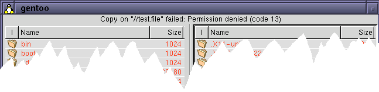

|
|
| LICENSE | GUIDE | INTRO | USAGE | CONFIG | HISTORY | CONTRIBUTING | ACKS |
The status line is the horizontal bar that goes from the left border and all the way to the right border in the top part of the gentoo window. It is used to show various bits of status information. Basically, there are two types of information shown: selection summary and command execution status. See below for details on what is shown in which mode.
During normal use, the status line shows a summary for the current dirpane. This summary (which is depicted in the layout screenshot), lists:
All in all, the status line provides eight pieces of data regarding the current directory and any selection you may have done in it. The slash characters (/) in the line should be thought of as "out of", so the first pair of digits, 0/18 in the screenshot, mean that 0 out of 18 directories have been selected. If you bother to count this manually, you'll see that there are actually 18 directories shown, and no directory seems to be selected either, so this is probably correct. Then, by direct analogy, the rest of the stuff must be correct too...
You might be amused (or annoyed) by the fact that the selected file sizes try to adapt the amount of bytes selected. This means that the precision and unit shown will change as you select more and more, going from "X bytes" to "X KB", over "X MB" and finally up to "X GB". If you are one of those people who just can't stand this kind of seemingly chaotic behaviour, you'll be glad to know that a future version of gentoo is likely to make the status bar contents configurable, too. Till then, chill. ;^)
Whenever you execute a command, such as copy a file, gentoo will report the command's exit status in the status line. For the most part, commands should succeed, and you will just see the single word "OK" in the status line. This is gentoo's way of signalling that the requested operation was carried out without complications.
If the command execution should fail for some reason (perhaps you don't have write permission in the destination directory), gentoo will complain with a line looking something like this:

The information given in the command status line is:
The idea is that the information shown shall help you understand what caused the problem, so that you can do something about it.